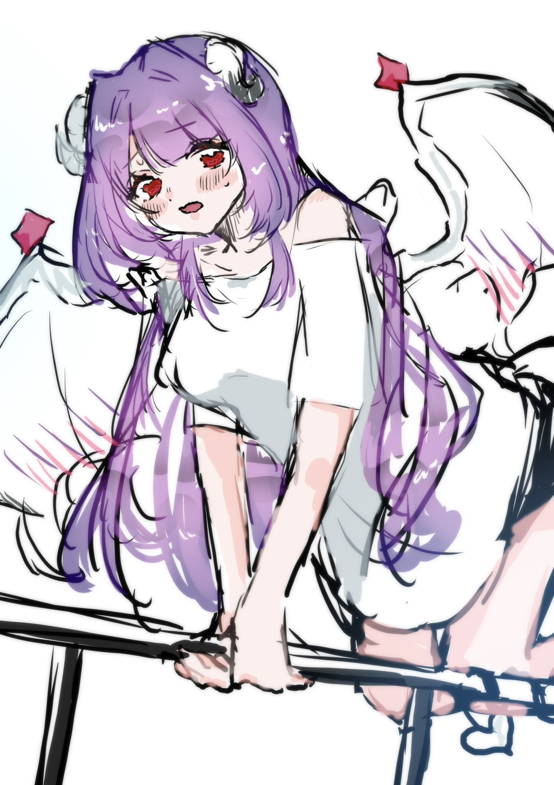
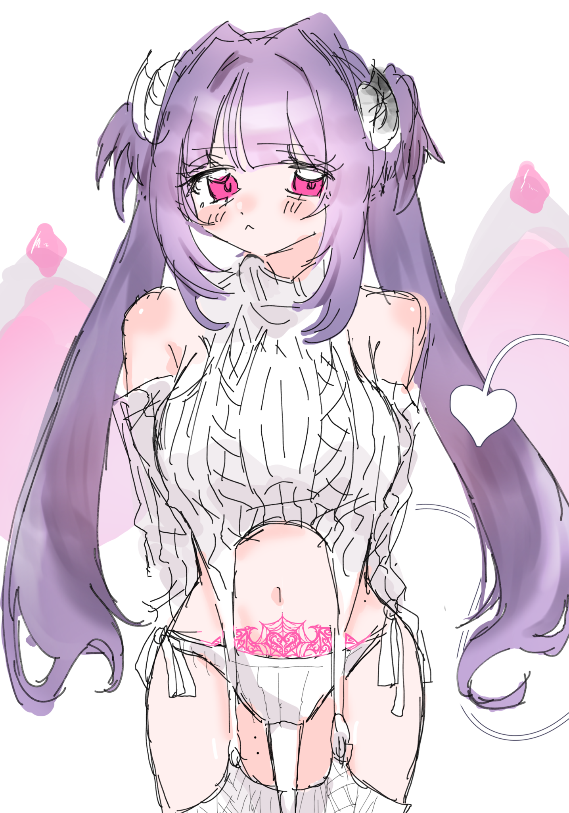
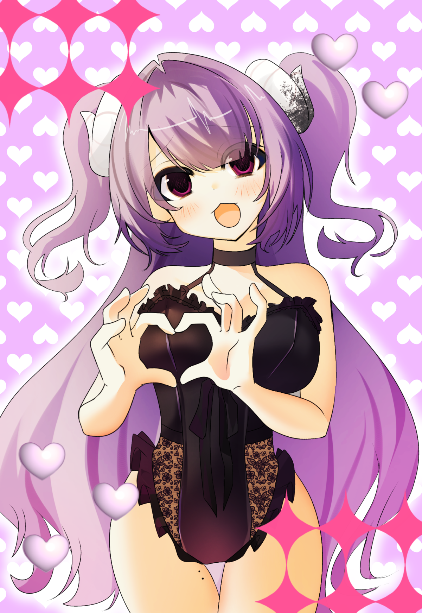
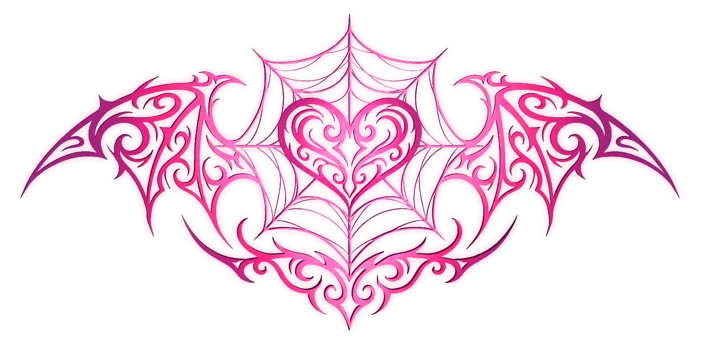

花乃院 毬
MARI KANOIN

PROFILE
NAME：花乃院 毬
BIRTHDAY：09 / 04
AGE：23
GENDER：女
HEIGHT：149cm
TYPE：ISFP
PERSONALITY：呑気 / チョロイン / ポンコツ
STORY
都内の高級住宅街に代々続く 「花乃院」という名家で育った少女。
厳格な家柄の中でありながら、 毬自身は穏やかで自由な性格をしている。
しかし彼女には、 家族にも隠された秘密が存在する。
次兄を除き、 花乃院家の人間とは血の繋がりを持たない。
CONTRACT
御堂羽 一颯との契約によって、 毬の運命は大きく変化した。
人間として生きてきた少女は、 サキュバスとしての力を得る。
姿が変わっても、 彼女の優しさと純粋さは変わらない。
DEMON FORM
契約後、黒髪と焦げ茶色の瞳は変化し、 紫色の髪とピンク色の瞳を持つ姿となった。
白い角・羽・尻尾を持ち、 翼には瞳と同じ色の宝石が輝いている。
角や羽、尻尾は大きさや収納を 自由自在に変化できる。
BODY FEATURE
149cmの小柄な体型。 丸い垂れ目と柔らかな雰囲気が特徴。
前髪はぱっつん。 顔周りには粗めのレイヤーが入っている。
人間だった頃の可憐さを残しながら、 現在は悪魔としての美しさを持つ。
SECRET
花乃院家に隠された秘密。
そして、人間でも悪魔でもない、 彼女だけの居場所を探す物語。
GALLERY
— 花乃院 毬 写真館 —

Human Days

Demon Form

Secret Memory
花乃院 毬の記録。
人間として過ごした日々、
そして悪魔として生まれ変わった後の姿。
CONTRACT MARK
— 契約によって刻まれた証 —

悪魔との契約によって刻まれた、 毬だけが持つ特別な紋章。
魔力の流れと共鳴し、 彼女の内側に眠る力を示している。